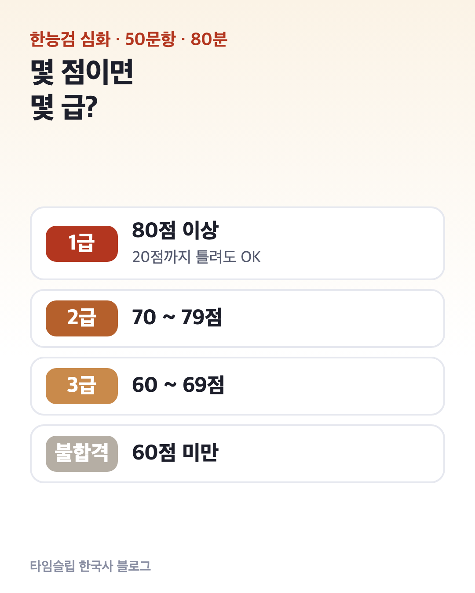
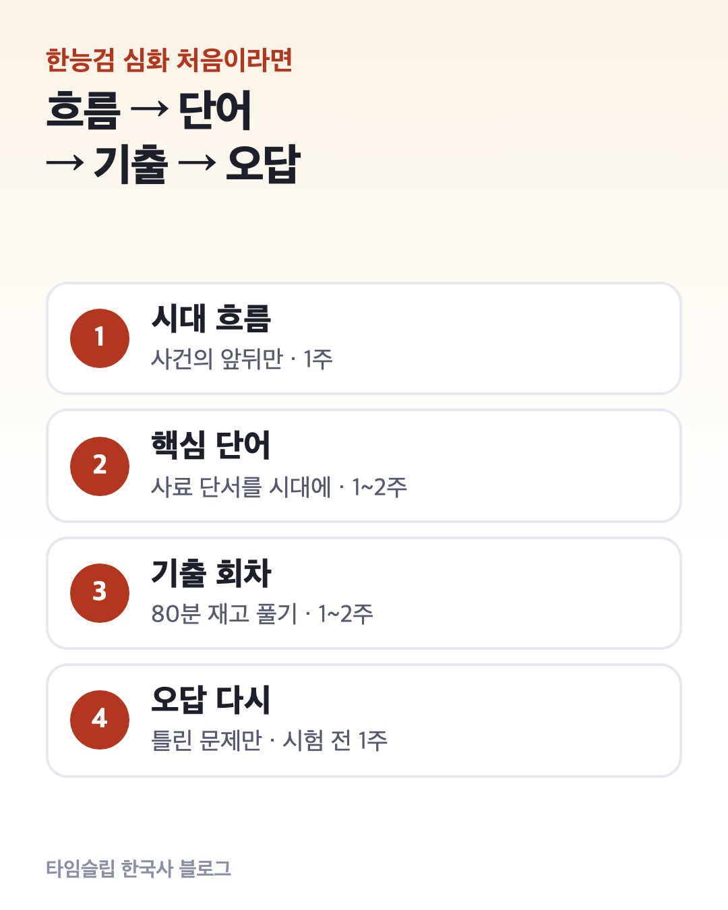
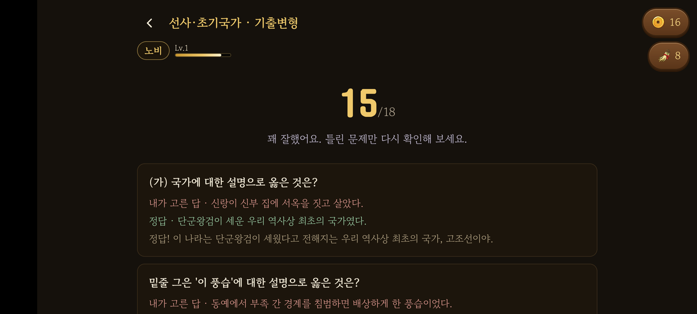

한능검 심화 시험 구성과 급수 기준｜50문항·80분, 몇 점이면 몇 급?
한국사능력검정시험(한능검) 심화는 50문항을 80분 동안 풀고, 점수에 따라 1·2·3급이 나뉘는 시험입니다. 합격·불합격이 아니라 점수 구간으로 급수를 받는 방식이라, 먼저 내가 몇 급이 필요한지부터 정하는 게 순서예요.
이 글에서는 ① 시험 구성, ② 급수 기준, ③ 81회 일정, ④ 목표 급수별 공부 순서를 정리합니다. (2026년 10월 기준)

1. 심화는 50문항, 5지선다, 80분
| 구분 | 심화 | 기본 |
|---|---|---|
| 문항 | 50문항 · 5지선다 | 50문항 · 4지선다 |
| 시간 | 80분 | 70분 |
| 급수 | 1 · 2 · 3급 | 4 · 5 · 6급 |
문항마다 배점이 1~3점으로 달라서 총점은 100점입니다. 공무원 시험, 교원임용, 공기업 등에서 요구하는 것은 대부분 심화예요.
2. 몇 점이면 몇 급인가요?
| 점수 | 심화 |
|---|---|
| 80점 이상 | 1급 |
| 70~79점 | 2급 |
| 60~69점 | 3급 |
| 60점 미만 | 불합격 |
예를 들어 1급이 필요하면 100점 중 20점까지만 틀려도 됩니다. 2급이 목표라면 30점까지 여유가 있어요.
필요한 급수는 지원하려는 시험·기관의 공고문에서 확인하세요. 같은 시험이라도 해마다 기준이 바뀔 수 있습니다.
3. 81회 일정 — 11월 3일 접수 시작
| 일정 | 날짜 (2026년) |
|---|---|
| 원서 접수 | 11월 3일(화) 10:00 ~ 11월 10일(화) 17:00 |
| 취소좌석 접수 | 11월 11일(수) 13:00 ~ 11월 13일(금) 17:00 |
| 시험일 | 11월 28일(토) |
| 합격자 발표 | 12월 11일(금) |
2026년 80회(10/17)와 81회(11/28)는 심화만 시행합니다. 국사편찬위원회는 2027년 9급 공무원 공채의 한국사 과목이 한능검으로 대체될 예정이라 응시자가 늘 것에 대비해, 2026년에 한해 시험을 한 번 더 편성했다고 안내하고 있어요.
접수 초반에 시험장이 빨리 차니 첫날 접수를 권합니다.
4. 처음이라면 이 순서로

- 시대 흐름 잡기 (1주) — 선사부터 현대까지 왕조와 큰 사건 순서만. 세부 내용보다 “이 사건이 앞이냐 뒤냐”를 먼저 정합니다.
- 시대별 핵심 단어 (1~2주) — 사료에 나오는 단서 단어를 시대에 붙이기. 예: 범금 8조 → 고조선, 사심관 → 고려 태조.
- 기출 회차 풀기 (1~2주) — 80분을 재고 한 회차씩. 점수보다 틀린 이유를 적습니다.
- 틀린 문제 다시 보기 (시험 전 1주) — 새 문제보다 틀린 문제를 두세 번 더 보는 쪽이 점수가 빨리 올라요.
목표가 2·3급이면 2단계와 3단계를 짧게 줄여도 되지만, 1단계 흐름은 건너뛰지 않는 게 좋습니다. 흐름이 없으면 단어가 따로 놀아서 외운 것도 시험장에서 안 떠올라요.
5. 한 장 정리
| 질문 | 답 |
|---|---|
| 구성 | 50문항 · 5지선다 · 80분 · 100점 |
| 급수 | 80↑ 1급 · 70점대 2급 · 60점대 3급 |
| 다음 시험 | 81회(심화만) · 접수 11/3~11/10 · 시험 11/28 · 발표 12/11 |
| 공부 순서 | 흐름 → 핵심 단어 → 기출 → 오답 |
시대별 핵심은 이 블로그에서 시대 순서대로 정리하고 있어요. 첫 시대는 고조선 핵심 정리입니다.
6. 기출을 시대별로 풀어 보고 싶다면

타임슬립 한국사는 선사부터 현대까지 시대별 이야기를 따라가며 기출 문제를 푸는 게임입니다. 시대마다 기출 변형 문제를 모아 풀 수 있고, 끝나면 틀린 문제만 해설과 함께 다시 보여 줘요.
출처: 국사편찬위원회 한능검 시험일정
이 블로그는 ‘타임슬립 한국사’ 앱 운영자가 씁니다. 공식 자료와 대조해 정리했습니다.